From documents to a Bedrock knowledge base in four cells
kbforge replaces the "run these twenty cells and hope" notebook. You describe the knowledge base you want, read a plan of exactly what will be created, and then build it with live progress.

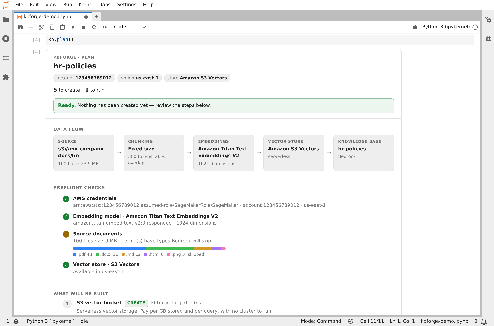
Why kbforge
Before you start
You need two things:
- Your documents in an S3 bucket, in the same region as the knowledge base. PDF, Word, Excel, CSV, HTML, Markdown and plain text all work. Or a public website you're allowed to crawl.
- A notebook role that can build things. Your SageMaker execution role needs access to Bedrock, S3 Vectors and IAM. The exact policy is under Permissions. If IAM is locked down, ask your admin for a Bedrock role and pass it as
role_arn=.
Install
Run this in a notebook cell, then restart the kernel if pip asks you to:
%pip install -q "kbforge[notebook] @ git+https://github.com/utkarsh5026/bedrcok.git"Then show the getting-started card. It's the whole journey on one screen:
import kbforge
kbforge.guide()
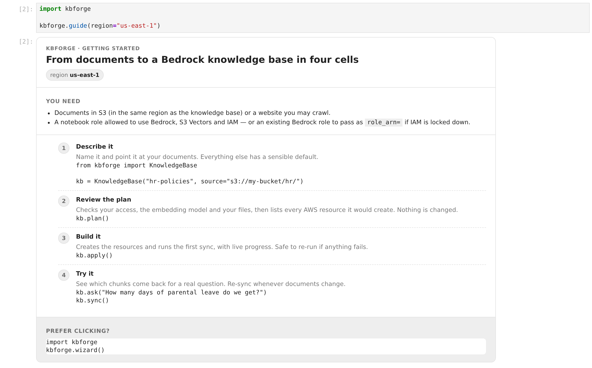
1 · Describe your knowledge base
A name and where the documents live. Everything else has a sensible default.
from kbforge import KnowledgeBase
kb = KnowledgeBase("hr-policies", source="s3://my-company-docs/hr/")
kbCreating the object doesn't call AWS. When displayed, it shows the data flow it's going to set up:

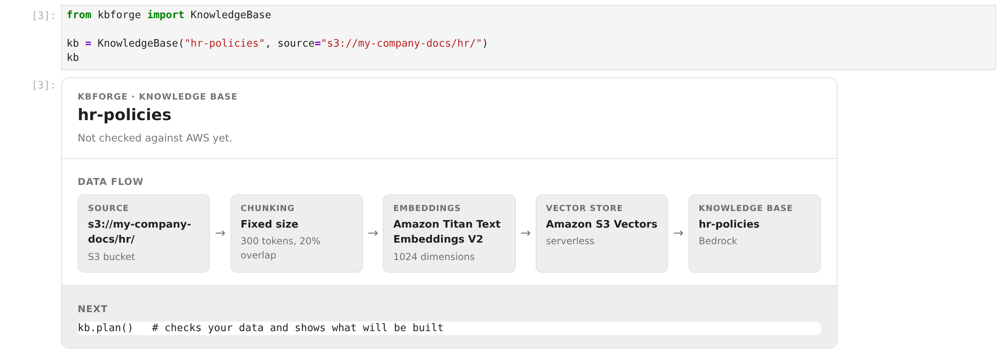
2 · Read the plan
kb.plan()plan() is read-only, so run it as often as you like. It does two things:
- Preflight checks. Are your credentials working? Does the embedding model actually respond for you? What's in the bucket, and can Bedrock read it? The bar shows your file types; anything Bedrock will skip is marked.
- What will be built. One row per AWS resource, in order, with its exact name and a badge saying what will happen. Fold-outs show details such as the IAM policy that will be attached.

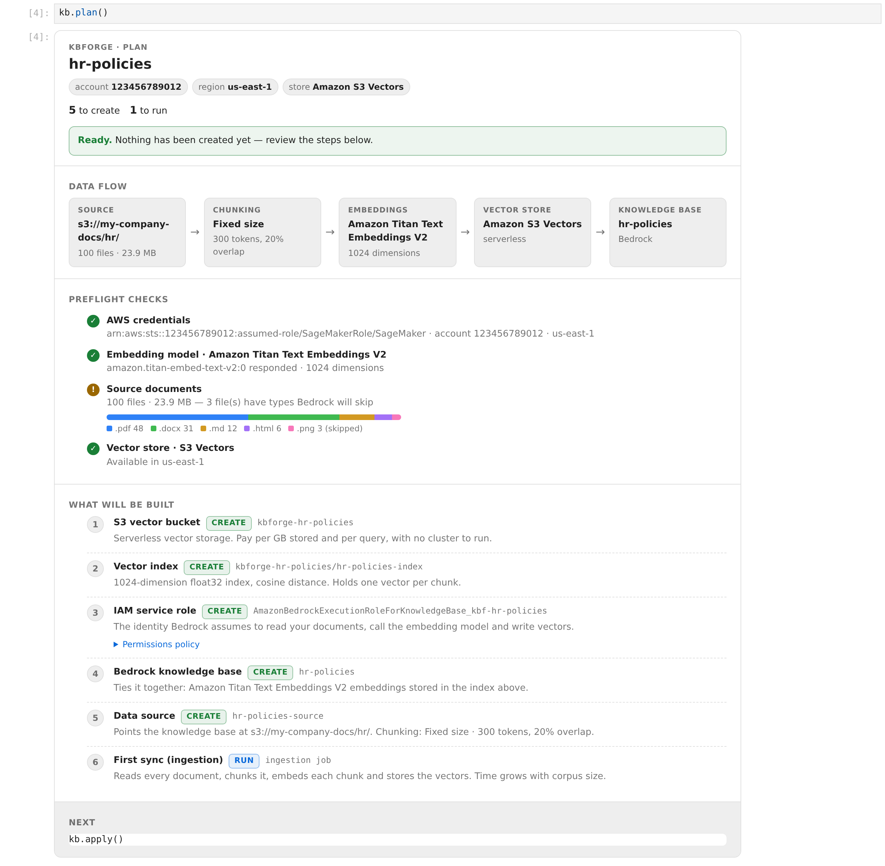
What the badges mean:
When the plan is blocked
If a check fails, the plan says so in red and apply() refuses to start. Nothing is half-built. In this example the bucket name has a typo:

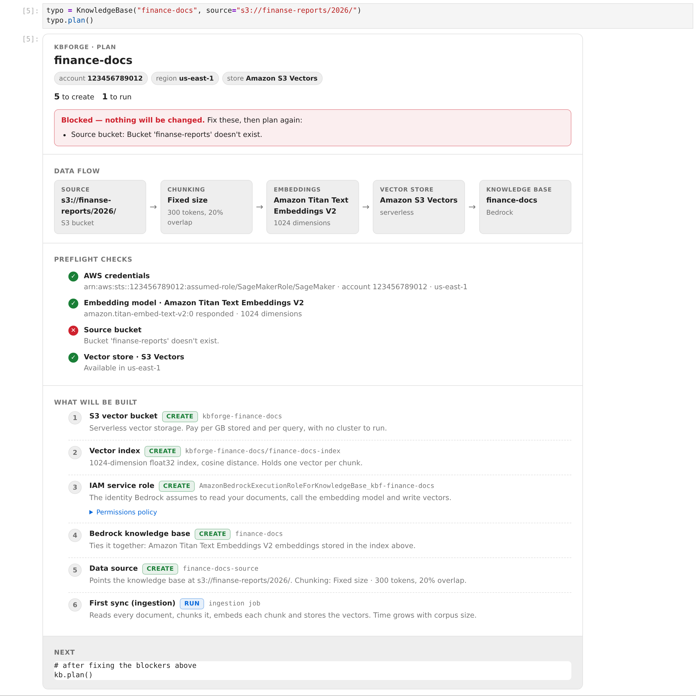
Fix the cause, run kb.plan() again, and carry on. Common blockers and their fixes are under Troubleshooting.
3 · Build it
kb.apply()The card updates in place while it works. Long waits, like a new collection or the first ingestion, show what's happening instead of leaving the cell looking frozen:

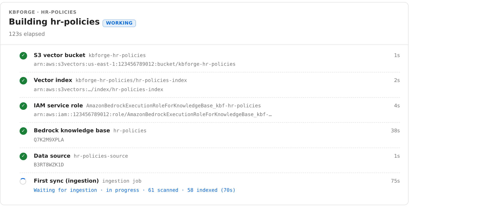
When it finishes, you get the IDs and the code to use the knowledge base from any application:

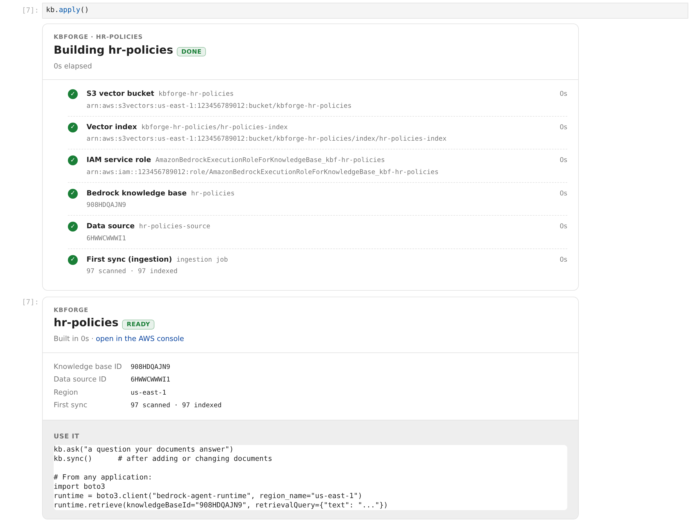
kb.apply() again. Anything already created is reused.4 · Try it
kb.ask("How many weeks of parental leave do we get?")This shows the chunks the knowledge base retrieves, best match first, with their scores and source documents. It's retrieval only (no LLM answer), which makes it the quickest way to judge whether chunking and embeddings suit your documents.

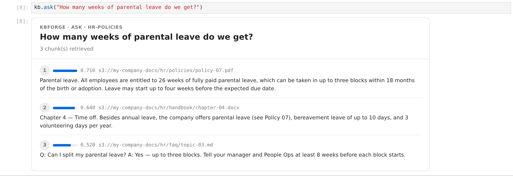
Sync, status & clean up
After documents change
kb.sync() # re-ingest: picks up new, changed and deleted files
kb.status() # ids, health and how the last sync went
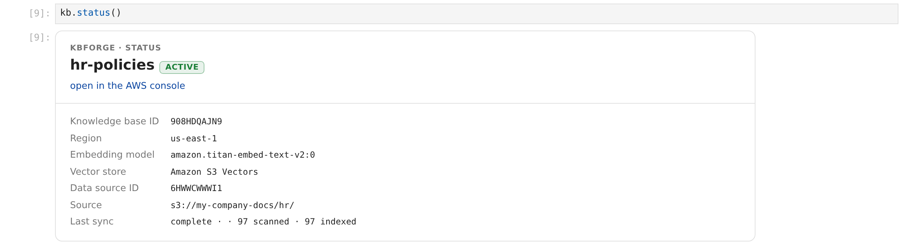
Save the definition
Write it to YAML so teammates (or CI) can rebuild the same thing:
kb.save("kb.yaml")
# later, anywhere:
kb = KnowledgeBase.from_yaml("kb.yaml")Delete it
kb.destroy() # shows what would be deleted, deletes nothing
kb.destroy(confirm=True) # actually deletes
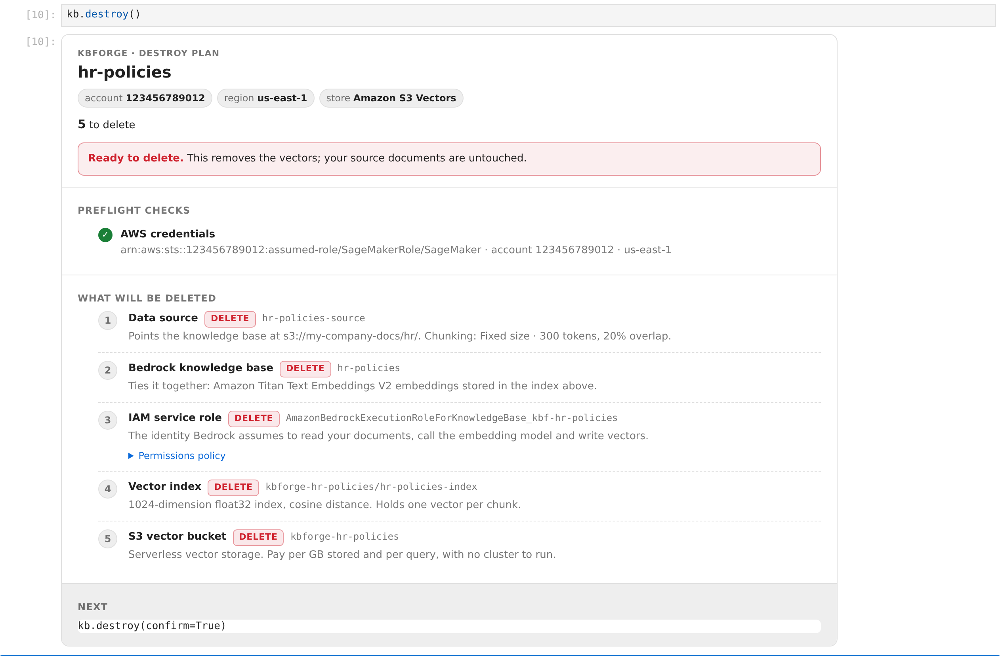
Your source documents are never touched. Anything kbforge didn't create (it checks for its managed-by: kbforge tag) and any role you supplied are kept. Use destroy(confirm=True, force=True) only if you're sure.
Prefer clicking? The wizard
import kbforge
kbforge.wizard()A form that walks through the same three stages: describe, review the plan, build. Show as code gives you the equivalent Python and YAML, so you can move to a committed config later.

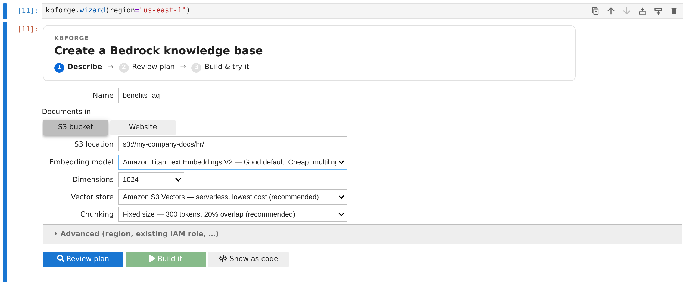

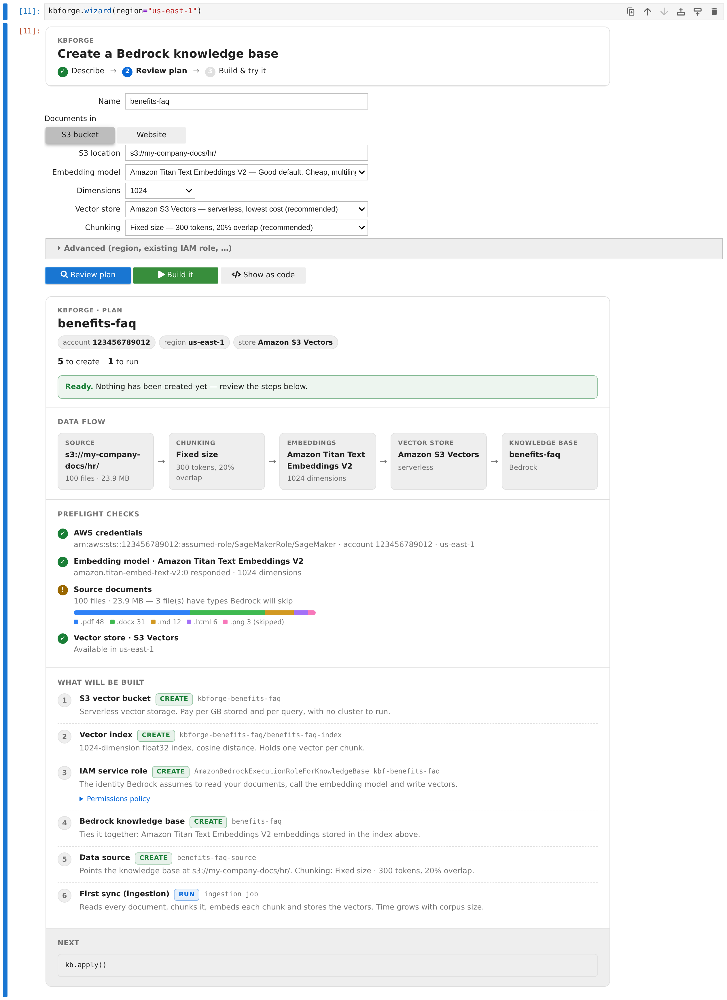

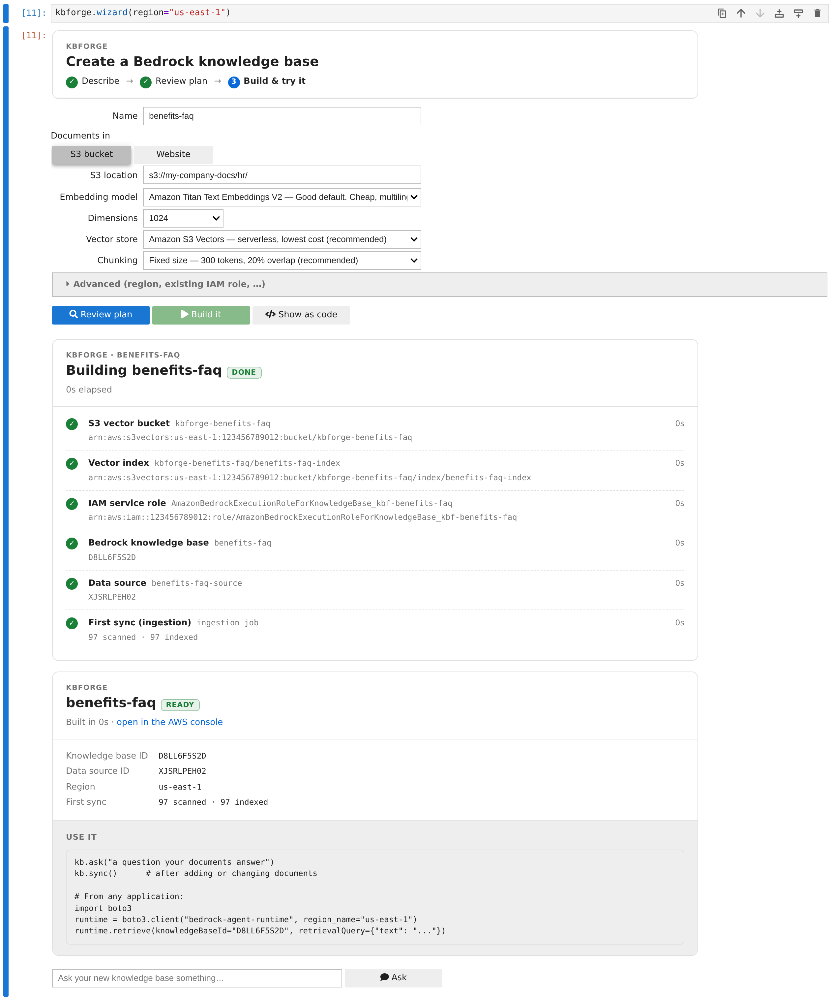
Options
Everything KnowledgeBase(...) accepts. The same keys work in YAML.
| Option | Default | What it does |
|---|---|---|
name | required | Knowledge base name. Letters, digits, - and _. All other resource names are derived from it. |
source | required | "s3://bucket/prefix/", "https://site", S3Source(...) or WebSource([...], max_pages=500). |
embedding | titan-v2 | titan-v2, cohere-en, cohere-multi, titan-v1. Fixed once the KB exists. |
dimensions | model default | Vector size. Titan v2 supports 256, 512 or 1024. |
vector_store | s3_vectors | s3_vectors or opensearch_serverless (needs pip install "kbforge[opensearch]"). |
chunking | fixed | fixed, hierarchical, semantic, none, or Chunking.fixed(500, 10) for custom sizes. Fixed once the data source exists. |
role_arn | create one | Reuse an existing Bedrock role instead of creating one. It's never deleted by kbforge. |
permissions_boundary | none | Attached to the role kbforge creates, if your organisation requires one. |
region | session default | AWS region for everything. Must match your bucket's region. |
description | generated | Shown in the Bedrock console. |
tags | {} | Added to every resource, alongside managed-by: kbforge. |
sync | True | Run the first ingestion as part of apply(). |
Choosing settings
| Decision | Start with | Switch when |
|---|---|---|
| Vector store | S3 Vectors: serverless, no minimum cost, nothing to manage. | You need hybrid (keyword + vector) search or very low-latency, high-QPS queries. OpenSearch Serverless bills for at least a couple of OCUs while it exists. |
| Embedding model | Titan v2, 1024d: cheap, multilingual, long input. | English-only corpus where retrieval quality matters most: try cohere-en. Many languages mixed together: cohere-multi. |
| Chunking | Fixed, 300 tokens, 20% overlap. | Long structured documents (policies, manuals): hierarchical. Topic changes don't line up with paragraphs: semantic (slower and costs more per sync). Already-small files such as FAQs: none. |
hr-policies-v2), compare with ask(), then destroy() the one you don't keep.YAML & the CLI
Keep definitions in git and build them from a terminal or CI with the same plan → apply flow:
# kb.yaml
name: hr-policies
region: us-east-1
source:
s3: s3://my-company-docs/hr/
embedding: titan-v2
vector_store: s3_vectors
chunking:
strategy: fixed
max_tokens: 300
overlap_percent: 20
tags:
team: people-opskbforge init # write a starter kb.yaml
kbforge plan kb.yaml # checks + what would be built
kbforge apply kb.yaml # asks before changing anything (-y to skip)
kbforge ask kb.yaml "question"
kbforge sync kb.yaml
kbforge status kb.yaml
kbforge destroy kb.yaml
kbforge models # supported embedding models
kbforge plan exits with code 2 when the plan is blocked, so CI can stop early.
What gets created
For a knowledge base named hr-policies using S3 Vectors:
| Resource | Name | Notes |
|---|---|---|
| S3 vector bucket | kbforge-hr-policies | Holds the index. |
| Vector index | hr-policies-index | float32, cosine. Bedrock's text/metadata keys are marked non-filterable to avoid the 2 KB metadata limit. |
| IAM role | AmazonBedrockExecutionRoleForKnowledgeBase_kbf-hr-policies | Trusted only by Bedrock in your account. Can invoke the one embedding model, read the source bucket and use this index. |
| Knowledge base | hr-policies | |
| Data source | hr-policies-source | Deletion policy DELETE: removing it also removes its vectors. |
With OpenSearch Serverless, the vector bucket and index are replaced by encryption and network policies, a collection, a data access policy (for the Bedrock role and you) and a k-NN index. Names are deterministic, so running the same definition twice finds the same resources and there's no state file to lose.
Permissions for your notebook role
The SageMaker execution role (or whoever runs kbforge) needs the policy below. Replace YOUR-DOCUMENTS-BUCKET. The IAM statements are scoped to roles whose names start with AmazonBedrockExecutionRoleForKnowledgeBase_kbf-, so kbforge can't touch any other role.
Show the policy (download JSON)
Loading…For OpenSearch Serverless also allow aoss:CreateCollection, aoss:BatchGetCollection, aoss:DeleteCollection, aoss:CreateSecurityPolicy, aoss:GetSecurityPolicy, aoss:DeleteSecurityPolicy, aoss:CreateAccessPolicy, aoss:GetAccessPolicy, aoss:UpdateAccessPolicy, aoss:DeleteAccessPolicy, aoss:APIAccessAll and aoss:TagResource.
bedrock.amazonaws.com, then pass role_arn=. The plan shows the exact permissions that role needs in the "IAM service role" fold-out, and you can drop the IAM statements above.Troubleshooting
| You see | What it means | Fix |
|---|---|---|
| Embedding model ✕ "can't invoke this model" | Model access isn't enabled for the account, or your role lacks bedrock:InvokeModel. | Bedrock console → Model access, or ask your admin. Try another region or model. |
| Source bucket ✕ "doesn't exist" | Typo in the bucket name, or it's in another account. | Check the s3:// path. |
| Source bucket region ⚠ | Bucket and knowledge base are in different regions. Bedrock requires them to match. | Pass region="<bucket region>". |
| Source documents ⚠ "types Bedrock will skip" | Images, zips and similar files are ignored. | Nothing to do, or convert them. Files over 50 MB fail and should be split. |
| Bedrock knowledge base: blocked | A KB with this name exists with a different model or vector store. | Pick a new name, or destroy() the old one. |
| "Your notebook's role is missing a permission" | An AWS call was denied; the message names the action. | Add it (see Permissions), then kb.apply() again. |
| "Bedrock can't see the new role/index yet — retrying" | Normal: new IAM roles take a few seconds to reach Bedrock. | Wait. kbforge retries for up to two minutes. |
| Sync finished with "N failed" | Some documents couldn't be parsed. | Check kb.status() and the ingestion job in the Bedrock console for per-file reasons. |
FAQ
Does plan() cost anything or change anything?
It changes nothing. The only billable call is one tiny embedding of the word "hello", which proves the model works for you. It costs a fraction of a cent.
Can I adopt a knowledge base someone created by hand?
If you use the same name, kbforge finds it and shows it as exists, or as blocked if its settings differ. destroy() leaves it alone because it has no kbforge tag.
Where's the state file?
There isn't one. Every resource name is derived from the knowledge base name, so kbforge always looks the resources up live in AWS. Two people running the same YAML see the same plan.
Can my application query it without kbforge?
Yes. It's a normal Bedrock knowledge base. Use bedrock-agent-runtime's retrieve or retrieve_and_generate with the knowledge base ID from the "ready" card.
How were these screenshots made?
By running a real JupyterLab against a simulated AWS account (the same fake the test-suite uses), so the IDs are made up and builds finish in seconds. Real builds take a few minutes, mostly for the first sync. Regenerate them with uv run --group docs python scripts/docs_screenshots.py.